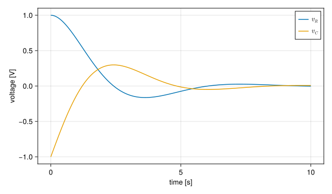

A series RLC circuit
A resistor, an inductor and a capacitor in a loop, with no source: the capacitor starts charged and current flowing, and both decay in a damped oscillation. Each element states one law,
\[\begin{aligned} \text{R}&: \quad v_R = R\,i_R \\ \text{L}&: \quad L\,\frac{di_L}{dt} = v_L \\ \text{C}&: \quad C\,\frac{dv_C}{dt} = i_C \end{aligned}\]
and the loop adds Kirchhoff's laws: the same current flows through all three, and the voltages around the loop sum to zero. This page builds the circuit the way STREAM builds a hydraulic loop, then looks at what ModelingToolkit makes of it. The circuit is a hydraulic loop in another notation: pressure is voltage, mass flow is current, a friction Resistor is a resistor and an Inertia is an inductor.
A connector
Elements meet at pins. A pin carries a voltage, equal at every pin joined to it, and a current, which sums to zero over them, counted positive into each element. Marking the current Flow is all it takes:
using ModelingToolkit, OrdinaryDiffEq, Latexifyusing ModelingToolkit: t_nounits as t, D_nounits as D@connector function Pin(; name) vars = @variables v(t) i(t) [connect = Flow] return System(Equation[], t, vars, []; name)endA connector has no equations of its own. connect writes them.
Components
Each element has two pins. What they share, the voltage across the element, the current through it and the conservation of that current, is written once:
function TwoPin(; name) @named p = Pin() @named n = Pin() vars = @variables v(t) i(t) eqs = [v ~ p.v - n.v, 0 ~ p.i + n.i, i ~ p.i] return compose(System(eqs, t, vars, []; name), p, n)endand each element extends it with its own law and parameter. @unpack takes the variables of the shared part as the element's own, rather than as a subsystem's. The resistor is named ElectricResistor to keep it apart from STREAM's hydraulic one.
function ElectricResistor(; name, R=1.0) two = TwoPin(; name) @unpack v, i = two ps = @parameters R = R return extend(System([v ~ i * R], t, [], ps; name), two)endfunction Inductor(; name, L=1.0) two = TwoPin(; name) @unpack v, i = two ps = @parameters L = L return extend(System([L * D(i) ~ v], t, [], ps; name), two)endfunction Capacitor(; name, C=1.0) two = TwoPin(; name) @unpack v, i = two ps = @parameters C = C return extend(System([C * D(v) ~ i], t, [], ps; name), two)endfunction Ground(; name) @named g = Pin() return compose(System([g.v ~ 0], t, [], []; name), g)endNothing here says which variable is computed from which. The resistor's law serves as well to find a current from a voltage as a voltage from a current.
The ground fixes the one voltage the loop leaves free. Kirchhoff's laws set voltage differences only, as a hydraulic loop sets pressure differences, which is why a STREAM loop fixes one pressure, as in pump.inlet.p ~ 1e5.
The circuit
The connections are equations too, in a list:
@named r = ElectricResistor(R=1.0)@named l = Inductor(L=1.0)@named c = Capacitor(C=1.0)@named ground = Ground()connections = [connect(r.n, l.p), connect(l.n, c.p), connect(c.n, r.p, ground.g)]@named circuit = compose(System(connections, t; name=:circuit), r, l, c, ground)expand_connections shows what the connections mean. Every equation of the model, the elements' and the connections', is then
latexify(equations(expand_connections(circuit)); env=:aligned)\[ \begin{aligned} \mathtt{r.v}\left( t \right) &= - \mathtt{r.n.v}\left( t \right) + \mathtt{r.p.v}\left( t \right) \\ 0 &= \mathtt{r.n.i}\left( t \right) + \mathtt{r.p.i}\left( t \right) \\ \mathtt{r.i}\left( t \right) &= \mathtt{r.p.i}\left( t \right) \\ \mathtt{r.v}\left( t \right) &= \mathtt{r.R} ~ \mathtt{r.i}\left( t \right) \\ \mathtt{l.v}\left( t \right) &= - \mathtt{l.n.v}\left( t \right) + \mathtt{l.p.v}\left( t \right) \\ 0 &= \mathtt{l.n.i}\left( t \right) + \mathtt{l.p.i}\left( t \right) \\ \mathtt{l.i}\left( t \right) &= \mathtt{l.p.i}\left( t \right) \\ \frac{\mathrm{d} ~ \mathtt{l.i}\left( t \right)}{\mathrm{d}t} ~ \mathtt{l.L} &= \mathtt{l.v}\left( t \right) \\ \mathtt{c.v}\left( t \right) &= - \mathtt{c.n.v}\left( t \right) + \mathtt{c.p.v}\left( t \right) \\ 0 &= \mathtt{c.n.i}\left( t \right) + \mathtt{c.p.i}\left( t \right) \\ \mathtt{c.i}\left( t \right) &= \mathtt{c.p.i}\left( t \right) \\ \frac{\mathrm{d} ~ \mathtt{c.v}\left( t \right)}{\mathrm{d}t} ~ \mathtt{c.C} &= \mathtt{c.i}\left( t \right) \\ \mathtt{ground.g.v}\left( t \right) &= 0 \\ \mathtt{r.n.v}\left( t \right) &= \mathtt{l.p.v}\left( t \right) \\ 0 &= \mathtt{l.p.i}\left( t \right) + \mathtt{r.n.i}\left( t \right) \\ \mathtt{l.n.v}\left( t \right) &= \mathtt{c.p.v}\left( t \right) \\ 0 &= \mathtt{c.p.i}\left( t \right) + \mathtt{l.n.i}\left( t \right) \\ \mathtt{c.n.v}\left( t \right) &= \mathtt{r.p.v}\left( t \right) \\ \mathtt{c.n.v}\left( t \right) &= \mathtt{ground.g.v}\left( t \right) \\ 0 &= \mathtt{c.n.i}\left( t \right) + \mathtt{ground.g.i}\left( t \right) + \mathtt{r.p.i}\left( t \right) \end{aligned} \]
Each connection gave an equality of voltages and a sum of currents. These are 20 equations in 20 variables.
Compiling
mtkcompile reduces them:
sys = mtkcompile(circuit)latexify(equations(sys); env=:aligned)\[ \begin{aligned} \frac{\mathrm{d} ~ \mathtt{c.p.i}\left( t \right)}{\mathrm{d}t} &= \frac{\mathtt{l.v}\left( t \right)}{\mathtt{l.L}} \\ \frac{\mathrm{d} ~ \mathtt{c.v}\left( t \right)}{\mathrm{d}t} &= \frac{\mathtt{c.p.i}\left( t \right)}{\mathtt{c.C}} \end{aligned} \]
Two differential equations remain, in two unknowns:
latexify(unknowns(sys); env=:inline)\[\left[ \begin{array}{c} \mathrm{\mathtt{c.p.i}}\left( t \right) \\ \mathrm{\mathtt{c.v}}\left( t \right) \\ \end{array} \right]\]
The three currents are one current, so MTK keeps one of them, here the current into the capacitor's positive pin. Which of a set of equal variables it keeps is its choice, and it does not matter: every other variable became an observed equation, computed from the unknowns.
latexify(observed(sys); env=:aligned)\[ \begin{aligned} \mathtt{ground.g.i}\left( t \right) &= 0 \\ \mathtt{c.n.v}\left( t \right) &= 0 \\ \mathtt{r.v}\left( t \right) &= \mathtt{c.p.i}\left( t \right) ~ \mathtt{r.R} \\ \mathtt{l.n.v}\left( t \right) &= \mathtt{c.v}\left( t \right) \\ \mathtt{c.i}\left( t \right) &= \mathtt{c.p.i}\left( t \right) \\ \mathtt{c.n.i}\left( t \right) &= - \mathtt{c.p.i}\left( t \right) \\ \mathtt{l.n.i}\left( t \right) &= - \mathtt{c.p.i}\left( t \right) \\ \mathtt{l.i}\left( t \right) &= \mathtt{c.p.i}\left( t \right) \\ \mathtt{l.p.i}\left( t \right) &= \mathtt{c.p.i}\left( t \right) \\ \mathtt{r.n.i}\left( t \right) &= - \mathtt{c.p.i}\left( t \right) \\ \mathtt{r.p.i}\left( t \right) &= \mathtt{c.p.i}\left( t \right) \\ \mathtt{r.i}\left( t \right) &= \mathtt{c.p.i}\left( t \right) \\ \mathtt{ground.g.v}\left( t \right) &= \mathtt{c.n.v}\left( t \right) \\ \mathtt{r.p.v}\left( t \right) &= \mathtt{c.n.v}\left( t \right) \\ \mathtt{r.n.v}\left( t \right) &= \mathtt{c.n.v}\left( t \right) - \mathtt{r.v}\left( t \right) \\ \mathtt{l.v}\left( t \right) &= - \mathtt{c.v}\left( t \right) - \mathtt{r.v}\left( t \right) \\ \mathtt{c.p.v}\left( t \right) &= \mathtt{l.n.v}\left( t \right) \\ \mathtt{l.p.v}\left( t \right) &= \mathtt{r.n.v}\left( t \right) \end{aligned} \]
The parameters are the three element values:
latexify(parameters(sys); env=:inline)\[\left[ \begin{array}{c} \mathtt{r.R} \\ \mathtt{l.L} \\ \mathtt{c.C} \\ \end{array} \right]\]
Python STREAM's version of this circuit states the reduced form by hand: three variables $(v_R, i, v_C)$, a mass vector marking which equations are differential, and each calculation told which variable it reads from which other. Here the reduced form is derived, and the components stay usable in any other circuit.
Solving
The initial state is the one Python STREAM's example uses: a current of 1 A and the capacitor at −1 V. The current is given for the inductor, whose current is not an unknown. That is allowed: initialization solves for the unknowns that make the given values hold.
prob = ODEProblem(sys, [sys.l.i => 1.0, sys.c.v => -1.0], (0.0, 10.0))sol = solve(prob, Rodas5P(); abstol=1e-10, reltol=1e-10)sol.retcodeReturnCode.Success = 1Any variable can be read from the solution, observed or not:
using CairoMakiefig = Figure(size=(650, 380))ax = Axis(fig[1, 1]; xlabel="time [s]", ylabel="voltage [V]")lines!(ax, sol.t, sol[sys.r.v]; label=L"v_R")lines!(ax, sol.t, sol[sys.c.v]; label=L"v_C")axislegend(ax)fig
With $R = L = C = 1$, the circuit is underdamped, $R < 2\sqrt{L/C}$. The current decays at $\alpha = R/2L$ and oscillates at $\omega_d = \sqrt{1/LC - \alpha^2}$. It starts at $i_0 = 1$ A with zero slope, since $L\,di/dt = -(v_R + v_C) = 0$ at the start, so
\[i(t) = i_0\, e^{-\alpha t} \left(\cos \omega_d t + \frac{\alpha}{\omega_d} \sin \omega_d t\right).\]
The solution follows it:
α, ω = 0.5, sqrt(1 - 0.5^2)i_exact(t) = exp(-α * t) * (cos(ω * t) + α / ω * sin(ω * t))@assert maximum(abs, sol[sys.l.i] .- i_exact.(sol.t)) < 1e-6maximum(abs, sol[sys.l.i] .- i_exact.(sol.t))3.2218498702274445e-13